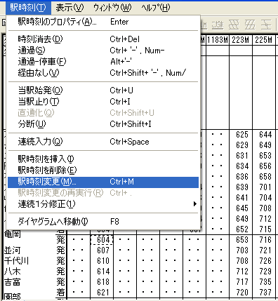
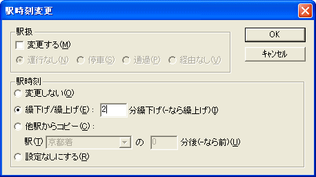
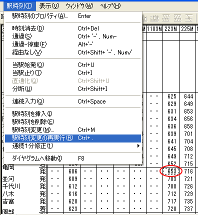
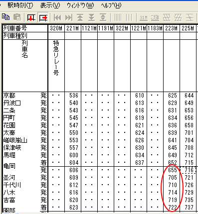

たくさんの列車を入力した後で、ある駅の時刻をまとめて修正したくなる場合があります。
たとえば、「すでに入力した複数の列車について、Ａ駅の発時刻を、今より2分繰下げたい」という場合が、これに該当します。
これを、『駅時刻のプロパティ』で一つ一つ変更するのは大変です。
ここで説明する『駅時刻変更』機能は、こんなときのために用意したものです。
（例では、複数の列車の亀岡の発時刻を、2分繰下げます。）
１． フォーカスセルを、変更したい列車の１本目の、変更したい駅時刻に移動してください。
２． メニューコマンド [駅時刻]→[駅時刻変更...] を選択してください。

（亀岡 6:04 発の列車にフォーカスを設定して、[駅時刻]→[駅時刻変更]を選択しています。）
・・・[駅時刻変更]ダイアログが開きます。
３． [駅時刻変更] ダイアログに、変更内容を入力してください。

（例では、「2分繰下げ」を指定しています。）
このダイアログの各項目には、以下のような意味があります。
駅扱を変更する場合は、チェックをONにしてください。
チェックを ON にした場合は、駅扱をどのように変更するかを、[運行なし]・[停車]・[通過]・[経由なし] から選択してください。
フォーカスセルの駅時刻の変更内容を、選択してください。
[変更しない]・・・駅時刻は変更しません。
[繰下げ/繰上げ]・・・フォーカスセルのある駅時刻を、現在の設定値のｎ分後にします（繰上げ・繰下げ）。繰下げの場合は正の数・繰上げの場合は負の数を指定してください。
[他駅からのコピー]・・・フォーカスセルのある駅時刻を、指定の駅時刻のｎ分後にします。ｎ分前にする場合は、負の数を指定してください。
この機能で駅時刻を変更した場合、後の駅への繰上げ・繰下げは行われません。
[設定なしにする]・・・フォーカスセルのある駅時刻を、[設定なし]にします。
参照： 駅時刻変更
４． [OK] を押してください。
・・・ [駅時刻変更] ダイアログで指定した内容が、時刻表ビューに反映されます。
５． フォーカスセルを、変更したい列車の２本目の、変更したい駅に移動して、メニューコマンド [駅時刻]→[駅時刻変更の再実行]を選択してください。
 メニューを選択する代わりに、 [ . ] (ピリオド)キーを押しても、同じ効果があります。
メニューを選択する代わりに、 [ . ] (ピリオド)キーを押しても、同じ効果があります。

・・・ さきほどの [駅時刻変更] ダイアログで指定した変更内容（例では、「発時刻を、現在の発時刻の[2]分後にする」指定）が、フォーカスセルの位置に適用されます。

６． これ以後、メニューコマンド [駅時刻]→[駅時刻変更の再実行]を連続して実行することにより、多数の列車の時刻を連続して変更することができます。
 このとき、『フォーカス移動モード』として『フォーカス右移動モード』を選択すると、さらに効率的です。 Ctrl キーを押し下げた状態で [ . ](ピリオド)
キーと [→] キーを連続して押すことにより、多数の列車の時刻を迅速に修正することができます。
このとき、『フォーカス移動モード』として『フォーカス右移動モード』を選択すると、さらに効率的です。 Ctrl キーを押し下げた状態で [ . ](ピリオド)
キーと [→] キーを連続して押すことにより、多数の列車の時刻を迅速に修正することができます。
参照：駅時刻変更 ダイアログボックス